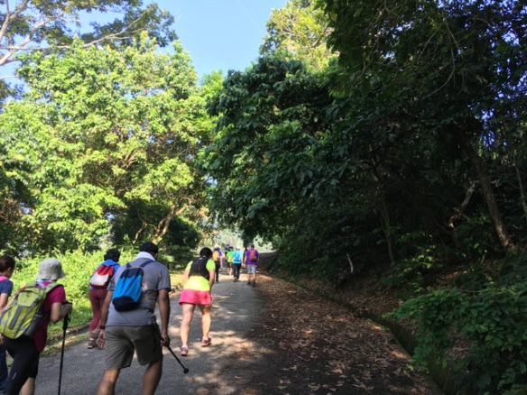
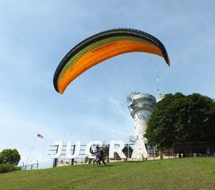
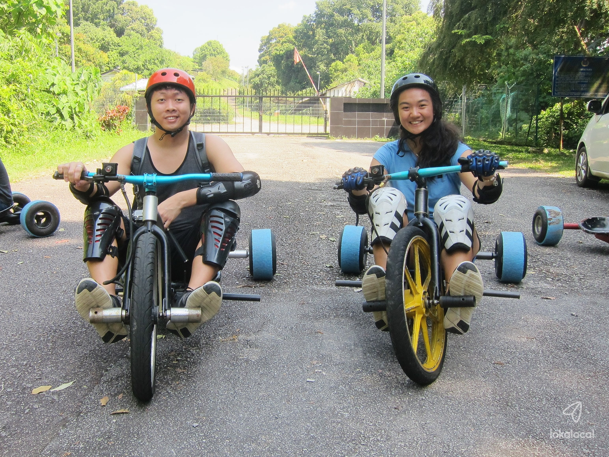

ACTIVITIES
HIKING
Jugra Hill is a moderately difficult 4.7-kilometer circle hike near Banting, Selangor, Malaysia that offers spectacular views. Hiking is the primary activity on the trail. Hutan Simpanan Kekal, or Permanent Reserved Forest, surrounds the area around Jugra Hill. The entry point at Masjid Al-Muttaqin in Kampung Permatang Pasir is one of the best sites to start your hike. The walk takes 1 to 1.5 hours to reach the top lighthouse and is appropriate for novices.
PARAGLIDING
In Jugra, paragliding is done from the base of the Bukit Jugra lighthouse, which stands 146 metres above sea level and was completed in 1976. Paragliding is highly dependent on wind conditions, with the ideal months to fly in Malaysia being March to September. Injugra paragliding: Each session lasts about 20 minutes, and you'll be flying in tandem with an instructor.
DRIFT-TRIKING
Riders race their drift trikes down the steepest hills they can locate as a gravity sport. The trike is similar to a tricycle, with the exception that the back wheels are wrapped in 5 inches of PVC to deliberately lose control of the rear wheel, causing it to "drift." The drift-triking experience is now available in Malaysia, thanks to the adrenaline jockeys of Fun Trikes. This experience will teach you how to ride a trike and allow you to drift down Bukit Jugra for up to 1.8 kilometres. All adventurers should participate in this exciting and stress-relieving sport! As you race down Bukit Jugra, enjoy the adrenaline rush of drift-triking.